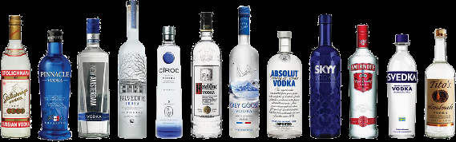
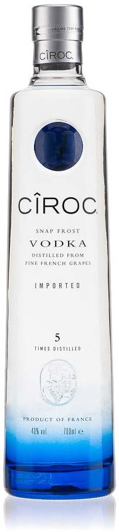

By Ephrayim Baskin | Sukkos 5778 — October 2017
Vaiser or gelle?
There are three answers to this spiritual question: Vaiser (vodka), gelle (whiskey) or no (the latter needs to be said more often – life does depend on the liver).
The kosher concerns of whiskey are often debated, and some prefer vodka, as gelle is just too whiskey (just gin and bare it). However, not all vodkas are kosher. In fact, although there is some halachic wiggle room with sherry cask whiskey, a non-kosher vodka is undoubtedly not kosher.
To increase our vodkabulary, a little background is needed. The word ‘vodka’, is a diminutive form of voda (Russian for water) and is translated as ‘little water’[1]. The drink has other names in the vodka-belt[2] which all have roots meaning ‘to burn’ (e.g. Branntwein – burning wine, or in Hebrew: Yayin Sorof)[3]. The burning doesn’t refer to the taste, rather its method of production – distillation.
All alcohols, well at least the ones that we drink, are made from sugar and yeast[4]. The yeast consumes the sugar and produces alcohol (and carbon dioxide) – known as fermentation. The source of the sugar is usually the main factor in what type of drink will be produced. Wine is fermented from grape juice, cider from apple, perry from pear, mead from honey, beer from barley[5] etc. However, the yeast commits suicide as it cannot survive when the alcohol content reaches about 14%. Therefore beer, wine and cider don’t have alcohol percentages above 14%.
To make drinks with higher alcohol contents, distillation is required, and these are known as ‘spirits’. (The word spirit stems from ancient middle eastern alchemy where the vapor collected during an alchemical process was referred to as the ‘spirit’ of the original material.[6])
Distillation is the process of separating components of a liquid mixture through evaporation and condensation. (The word distil originates from the Latin stilla – ‘drop’, as the condensate drops as it is cooled[7].) In the case of alcohol, the source liquid contains alcohol, water and other impurities. The alcohol evaporates at a lower temperature, and this vapour is cooled and condensed into a more concentrated alcoholic solution. In the alcohol industry, distillation occurs at a ‘distillery’ and the distillation equipment is called a ‘still’.
A lot of spirits are only partially distilled alcohols. For instance, whiskey and brandy are distilled until the alcohol content is about 40% alcohol. As such, a lot of the flavours and impurities of the source material remain. (Technically the distillation can be to a higher alcohol percentage and then diluted to sales strength, however the source carbohydrate is still easily detectable). However, with vodka, the source alcohol is distilled multiple times until an almost pure alcohol is produced. Many vodka labels will even boast how many times the product has been distilled. Thereafter, the highly-concentrated alcohol is diluted with water.
Traditionally, vodka was made in the vodka-belt from fermented grains and potatoes, but as vodka is essentially no more than watered down pure alcohol, it can really come from any sugar source. In fact, about a decade ago, the French company Cîroc distilled a beverage from grapes and branded it as Vodka (because wine not?). This opened the market to other vodkas made from rice, honey, whey and fruit juices. The vodka-belt countries were not impressed, but other members of the EU, such as the UK and France, said they were just sour grapes. The heated debate became known as ‘The Vodka War’[8]. It became quite the soap vodka.
The compromise, and current EU ruling, was that if vodka is produced from any item other than cereals, potatoes or molasses, it needs to be mentioned on the label. However, the ruling remains controversial and further compromises have been made. For instance, the requirement for the print size of source material has been dropped[9].
Other countries have differing regulations. Canada only allows grain or potato spirits to be called vodka[10]. However, the US standards do not require specific source materials and vodka could be any ‘neutral spirits so distilled, or so treated after distillation with charcoal or other materials, as to be without distinctive character, aroma, taste, or color’[11]. Australian standards do not give clear restrictions on vodka other than it should be at least 37% alcohol and that it has the taste, aroma and other characteristics generally associated with vodka[12]. Therefore, consumers in the US and Australia need to be aware that even if the label doesn’t mention it[13], their vodka could be Oddka.
For the kosher vodka consumer, the source material may have some implications. At first glance, vodka derived from grape or whey would have kosher issues, as grape vodka would be derived from non-kosher wine, and whey vodka would be at the very best derived from kosher dairy per R’ Moshe Feinstein’s leniency for Cholov HaCompanies. There are now many grape vodkas in the market and, especially in Australia and New Zealand, dozens of milk and whey vodkas[14].

However, the kosher vodka discussion isn’t that neat; the cocktail has a little twist. Although the Shulchan Aruch (YD 123:24) rules that a distilled spirit from non-kosher wine remains non-kosher despite its transformation during the distillation process, there are some Poskim who argue that this is limited to Yayin Nesech (wine handled by an actual idol worshiper), whereas a distilled product from Stam Yaynom (wine handled by a non-idol worshipping gentile) would be kosher[15]. However, a clear majority of Poskim maintain that the ruling of the Shulchan Aruch would apply to all types of forbidden wine or other prohibited substances. Thus, any distilled product retains the same kosher status as its source material[16]. The Minchas Yitzchak (8:68) concludes that this is the strong established custom.
Similarly, with whey vodka: Although whey is only considered rabbinically dairy, after distillation it still carries its dairy status, and would be forbidden for those who do not follow R’ Moshe Feinstein’s leniency of Cholov HaCompanies[17]. In some scenarios, it would also be prohibited to those who are lenient and drink Cholov HaCompanies[18]. No whey mate.
Even if the vodka has been cleared of any grapeful and wheyward origins, there are still other ingredients that need to be checked, such as the yeast culture, antifoams and additives like colourings and flavourings.
A chassidishe explanation to prefer vaiser over gelle is that with vodka, one consumes pure alcohol (albeit diluted with water) without any other desired taste sensations or physical expectations. As such, it is consumed for the sole purpose of l’chaim – that is, not to cause any negative consequences, but to help inspire ourselves with joy, to increase camaraderie, and to request blessings of life from Hashem. To achieve this, alcohol (vaiser or gelle or other) should only be consumed in positive and kosher conditions, with a positive and kosher spirit, for positive and kosher purposes[19].
[1] Harper, D. (2017). Vodka - Online Etymological Dictionary. Retrieved 27/9/17 from http://www.etymonline.com/index.php?term=vodka
[2] Wikipedia. (2017). Alcohol Belts of Europe. Retrieved 27/9/17 from https://en.wikipedia.org/wiki/Alcohol_belts_of_Europe#Vodka_belt The vodka belt refers to the Nordic States, Baltic States, Russia, Poland, Belarus and Ukraine (as opposed to the beer belt – central European countries and the UK, and the wine belt – Mediterranean countries).
[3] Wikipedia. (2017). Vodka. Retrieved 27/9/17 from https://en.wikipedia.org/wiki/Vodka
[4] It is interesting to note that the word alcohol is derived from the Arabic word, ‘alkuhl’, which means a ‘powder for painting eyelids’, for the powder was mixed with alcohol. This word in fact appears in the Mishnah (Shabbos 8:3) as K’chol, meaning a powder for painting eyelids (Bleich, Z. (2008). The Story of Wine, Beer, and Alcohol. Kosher Food Production 2nd ed. Wiley-Blackwell.)
[5] Regarding grain-derived alcohols, the carbohydrate is in a more complex form and needs to be converted to simple sugars through the malting or other enzymatic processes.
[6] Wikipedia. (2017). Distilled Beverage. Retrieved 27/9/17 from https://en.wikipedia.org/wiki/Distilled_beverage
[7] See Bleich, Z. above.
[8] Nickles, J. A. (2015). Wine, wit and wisdom – The Vodka War. Retrieved 27/9/17 from http://winewitandwisdomswe.com/2015/03/04/the-vodka-war/
[9] Wikipedia. (2017). The Vodka War. Retrieved 27/9/17 from https://en.wikipedia.org/wiki/Vodka_war
[10] Government of Canada. (2017). Justice Laws Website – Food and Drug Regulations (C.R.C., c. 870). Retrieved 27/9/17 from http://laws- lois.justice.gc.ca/eng/regulations/c.r.c.,_c._870/page-31.html#h-59
[11] Cornell Law School. (2017). 27 CFR 5.22 – The standards of identity. Retrieved 27/9/17 from https://www.law.cornell.edu/cfr/text/27/5.22
[12] FSANZ. (2017). FSANZ 2.7.5-2 Spirits. Retrieved 27/9/17 from https://www.legislation.gov.au/Series/F2015L00399
[13] E.g. Old Youngs Vodka, Ciroc and some Grey Goose varieties
[14] E.g. Vodka O, VDKA 6100, Black Cow Vodka, 666 Autumn Butter Tasmanian Vodka and Hartshorn Sheep Whey Original Vodka
[15] Shulchan Gavoah and Mishkenos Yaakov as understood by the Sefer Yayin Nesachim pages 80-86. See also Yayn Malchus Chapter 1:20 in notes.
[16] Gr”a YD 123:54, Kitsur Shulchan Aruch, Minchas Yitzchak and more (see Yayin Nesachim and Yayn Malchus above).
[17] Minchas Yitzchok 7:59
[18] E.g. swiss whey, or whey mixed with stretch water – although there are strong arguments to say it would not become ossur b’dieved.
[19] I was going to rummage into rum, share ginteresting ginius and ginspirational gin ginnovations, but I thought it would be enough tequila. For those interested in other spirits, please consult the Kosher Australia Food Guide.
Originally published in Young Yeshivah Magazine. Republished with permission.